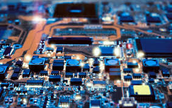

hardware
El hardware es la parte física de un sistema informático. Incluye todos los componentes electrónicos y mecánicos que forman una computadora y sus periféricos, como la CPU (procesador), la memoria RAM, el disco duro, la placa base, la tarjeta gráfica, y dispositivos externos como teclados, ratones e impresoras. En resumen, el hardware es la infraestructura tangible que permite el funcionamiento del software y la ejecución de tareas en un sistema informático.
LAS PIONERAS DE LA COMPUTACION

De todo lo visto del tema de hardware hubo un tema que mas me llamo la atención el cual era “las pioneras de la computacion” ya que estas mujeres marcaron un antes y un después en la programación y en la tecnología sin ellas lo que conocemos y tenemos de la informática no existiera y a pesar de que en esas épocas las mujeres no eran consideradas mucho ellas Decidieron luchar por aquello que les apasionaba y con su esfuerzo y talento se abrieron paso en la programación, un mundo en el que las mujeres todavía hoy siguen siendo minoría. Ellas marcaron el punto de partida en muchas de las tecnologías que utilizamos hoy en día.
- Ada Lovelace (1815-1852): Considerada la primera programadora de la historia, Ada Lovelace trabajó con Charles Babbage en la máquina analítica, una computadora mecánica temprana. Escribió un algoritmo para esta máquina, lo que la convierte en la primera persona en escribir un algoritmo destinado a ser procesado por una máquina.
- Grace Hopper (1906-1992): Fue una pionera en el desarrollo de lenguajes de programación. Hopper desarrolló el primer compilador para un lenguaje de programación y fue fundamental en la creación de COBOL, un lenguaje de programación utilizado en aplicaciones empresariales.
- Hedy Lamarr (1914-2000): Aunque más conocida como actriz de Hollywood, Lamarr también fue una inventora. Junto con el compositor George Antheil, desarrolló una técnica de salto de frecuencia para la transmisión de señales que sentó las bases para las tecnologías de comunicaciones modernas como el Wi-Fi y el Bluetooth.
- Jean E. Sammet (1928-2017): Fue una pionera en la programación y el desarrollo de lenguajes de programación. Sammet contribuyó al desarrollo del lenguaje de programación COBOL y fue una figura clave en la promoción de los lenguajes de programación y la informática en general.